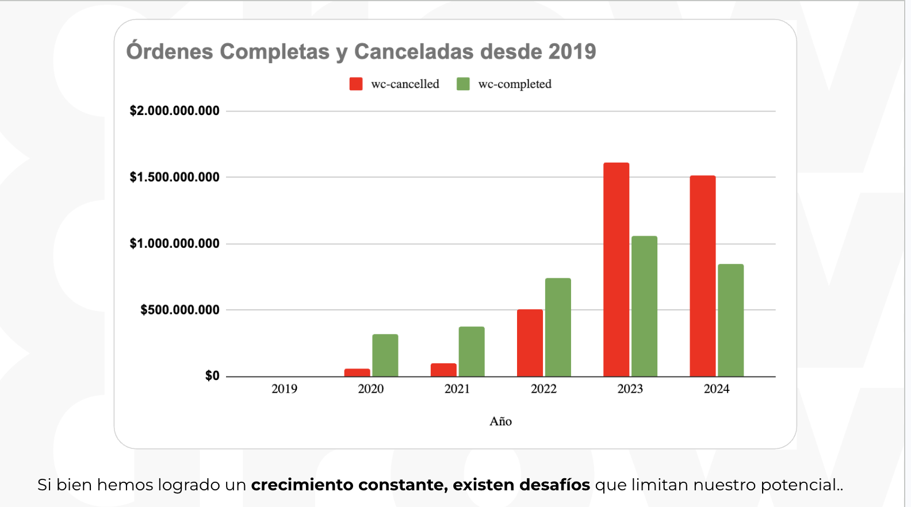

El reto
Cristar ya vendía online. El reto era ordenar una operación en crecimiento.
La tienda venía de WordPress + WooCommerce. En mayo de 2025 migró a Shopify para construir una base más clara, medible y preparada para escalar.
El diagnóstico
El negocio crecía, pero la operación mostraba fricciones que podían limitar parte de su potencial.
El diagnóstico conectó histórico transaccional, checkout, navegación, catálogo y plataforma.
31.887 órdenes históricas entre 2019 y 2024 permitían leer patrones de fricción y oportunidad.
18.095 órdenes completadas y 13.792 canceladas evidenciaban una tensión operativa relevante.
La compra tenía fricciones asociadas a pagos, compatibilidad y claridad del proceso.
El catálogo requería orden: cerca de 600 SKUs simples/PDP y productos variables por estructurar.
La oportunidad
¿Qué pasaría si una parte de los pedidos cancelados pudiera recuperarse?
Los escenarios de 15% y 30% se leyeron como hipótesis de negocio, no como resultados. Sirvieron para dimensionar la oportunidad antes de priorizar decisiones.
Escenario hipotético de recuperación parcial.
Escenario hipotético ampliado para dimensionar la oportunidad.
Decisiones estratégicas
La decisión no era solo migrar. Era ordenar el sistema ecommerce.
Migración Shopify
Pasar de una base heredada a una plataforma ecommerce más preparada para operación y medición.
UX y navegación
Reducir carga cognitiva, mejorar claridad y facilitar la exploración de productos.
Catálogo y SEO
Ordenar productos, variables, imágenes, metadatos y estructura de contenido.
Checkout y pagos
Simplificar la compra y habilitar mejores condiciones para reducir fricción.
Evidencia
La lectura histórica permitió separar síntomas, hipótesis y resultados posteriores.

Aprendizaje estratégico
Cristar demuestra que el crecimiento no depende de una sola palanca.
Depende de ordenar el sistema que conecta negocio, experiencia, tecnología y performance.